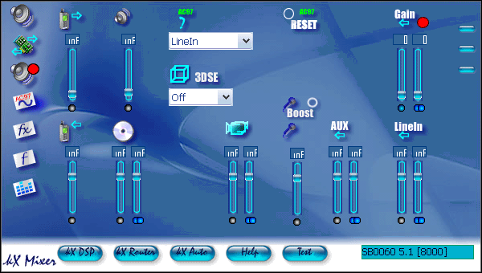
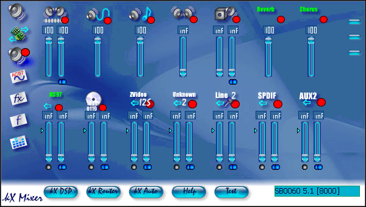
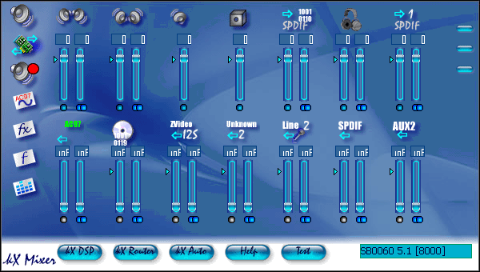

This part of the guide will show you how to set up the microphone for use in MME sound programs, such as SoundForge, and programs such as Teamspeak.
One of the most common problems mentioned in the kX
Project Forums is that the microphone does not work in a given program.
This
section of the guide is designed to help you make the microphone work.
Lets start with the AC-97 page of the kX Mixer

You can see here how it may become a little confusing.
In the following pic i have shown you what the AC-97 page should look like to get the microphone working.
1. This drop down box is where you choose what input you want to record from,
set this to "Mic"
2. There will be no sound if the mic is muted,
so make sure that the small circle is blue (un-muted) and that the slider is
up until the number above it says "0"
3. The microphone boost
amplifies the microphone signal by 20dB if it was not loud enough, and that
is why the box above the mic says "20"
Now the AC-97 Page is setup, lets move to the Record Window

This is not setup by default to use the microphone, so lets fix this.

1. The first step in this window, and that is to unmute
the AC-97 input, and to set the level to "0" (Clicking the little
arrow on the side will automatically set the level to "0")
2. Make sure you mute the "Wave Recording Level" as that will record everything
that you hear through the speakers, and will often cause echoing in your
recordings
Now to the Ins & Outs Page Now the microphone should work

We need to unmute the AC-97 Slider…

…and set the level to maximum.
Top Index
kX Guide © 2004 by Chris Stannard, a kX
user. All rights reserved.